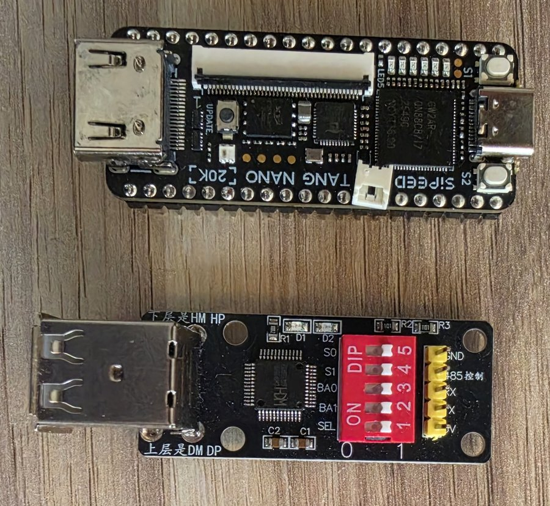
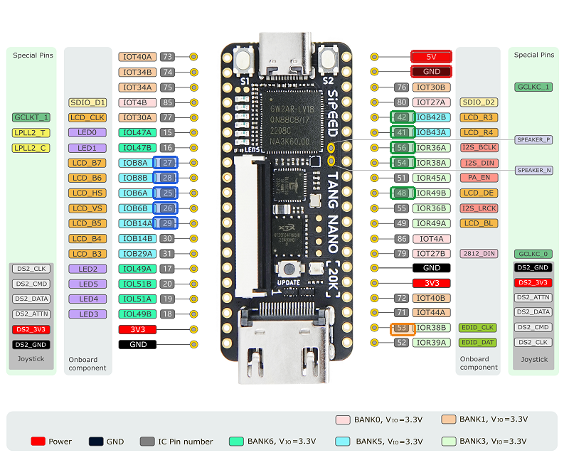
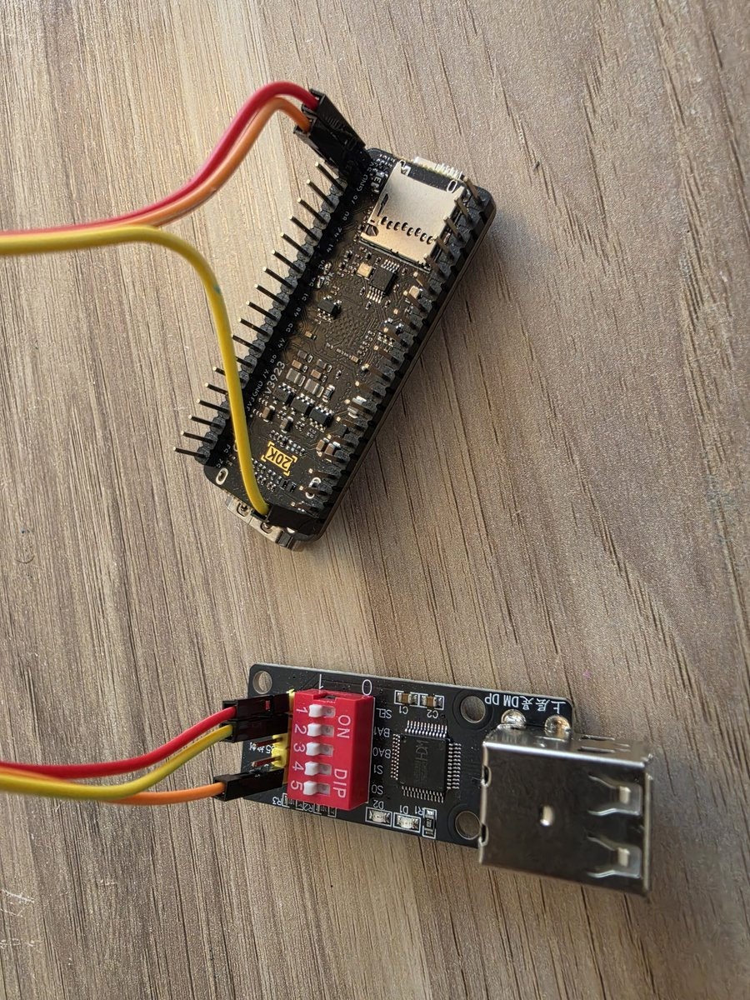

2. Hardware setup
What to plug in, what to wire to the header pins, and which pins to leave alone.

What you need
| Item | Notes |
|---|---|
| Sipeed Tang Nano 20K | GW2AR-LV18 FPGA (GW2AR-LV18QN88PC8/I7) |
| Micro-SD / TF card | FAT32, 32 GB or smaller |
| HDMI cable and monitor | Any HDMI 1.3 or later monitor (see the display note below) |
| Keyboard (recommended) | USB keyboard via a CH9350 USB-host board or a Raspberry Pi Pico — three wires: 5 V, GND and its TX to pin 53 |
| DB9 joystick(s) | Standard Atari/Commodore digital joystick, wired to header pins (the board has no DB9 connector). One stick on port 1 is enough to drive the OSD. |
| Dupont jumper wires | To wire the joystick and keyboard to the GPIO header |

The board
The Tang Nano 20K provides everything except the input connectors on board:
- HDMI — video and audio out. Connect it directly to the monitor or TV.
- USB-C — powers the board, is used to flash the bitstream, and carries the PC Link serial port. No other power supply is needed.
- Micro-SD (TF) slot — holds the ROMs, disk images, cartridges and
atari.ini. Format the card as FAT32; cards up to 32 GB are supported. - Two buttons S1 and S2 and a row of LEDs — see below.
- 2.54 mm GPIO headers — where the keyboard adapter and joysticks attach.
Keyboard adapter
The board has no USB keyboard port. A small external module acts as the USB host for your keyboard and streams standard CH9350 serial frames (115200 baud, 8N1) of raw USB HID reports into the FPGA, where they are decoded in hardware. Only one data wire is needed — no resistors. Two modules are supported.
Wiring (both modules)
External module Tang Nano 20K GPIO header
────────────────── ──────────────────────────
GND ─────────────────► GND (any GND pin)
5V/VCC ─────────────────► 5V (powers the module)
UART TX ─────────────────► Pin 53 (IOR38B)
Option A: CH9350 module
The CH9350 is a plug-and-play USB-host-to-UART converter.
- Set the DIP switches on the CH9350 board to State 0 (Host Mode / Direct Data Transmit) and 115200 baud. (On typical CH9350L boards the configuration switches
S1andS2select Host Mode at 115200 baud.) - Plug your USB keyboard into the USB-A port on the CH9350 board.
- Connect the CH9350's
TXDpin directly to pin 53 on the Tang Nano 20K, plus GND and 5V as above.
Option B: Raspberry Pi Pico (RP2040)
A Pi Pico can act as a programmable drop-in replacement for the CH9350.
- Connect a USB keyboard to the Pico's micro-USB port with a micro-USB-to-USB-A OTG adapter.
- Program the Pico with a sketch that uses the
TinyUSBlibrary in host mode to capture keyboard events and, for every key press or release, sends the 8-byte HID report as a CH9350 packet:The frame goes out on the Pico's UART TX pin at 115200 baud.Field Bytes Value Header 2 0x57 0xABCommand 1 0x88Length 1 0x0BKeyboard ID 1 0x10HID report 8 [modifiers, 0x00, key1, key2, key3, key4, key5, key6]Serial number 1 0x00Checksum 1 Sum of the bytes from the Keyboard ID through the serial number - Connect the Pico's UART TX pin directly to pin 53.
Key mapping is by position: the PC keyboard behaves like an Atari keyboard. See Keyboard for the full table.
Joysticks
Standard Atari/Commodore DB9 digital joysticks connect directly to header pins. Each controller uses five signal pins (Up, Down, Left, Right, Fire) plus a shared GND. No resistors are needed — the FPGA holds each pin high with an internal pull-up and the joystick's switch pulls it to GND when pressed (the signals are active-low).
A digital joystick is passive: every direction and the fire button is just a switch to a common line, and that common is GND. No +5 V is required — leave DB9 pin 7 unconnected. (Pin 7 / +5 V is only for powered controllers such as paddles, mice and active autofire pads, which this core does not support.) Connect the DB9's GND (pin 8) to any GPIO-header GND.
| DB9 pin | Signal | Joystick 1 → board pin | Joystick 2 → board pin |
|---|---|---|---|
| 1 | Up | 27 | 42 |
| 2 | Down | 28 | 41 |
| 3 | Left | 25 | 56 |
| 4 | Right | 26 | 54 |
| 6 | Fire | 29 | 48 |
| 8 | GND | any GND | any GND |
| 7 | +5 V | not connected | not connected |
Joystick 1 sits on the left header and Joystick 2 on the right header, each as a block of consecutive pins.

- Pins 69–76 and 79 — they belong to the on-board BL616 MCU (UART/HSPI and the WS2812 LED). The BL616 is always on and drives them, which produces phantom joystick input.
- Pin 51 — the PLL clock input.
- Pin 32 — it is on the LCD flex connector, not a solderable header.
Buttons
| Button | Pin | Function |
|---|---|---|
| S1 | 88 | Hardware reset of the whole board (FPGA and firmware restart; the ROMs are reloaded from the SD card) |
| S2 | 87 | Open / close the OSD menu (same as F12). It is the rightmost button on the board and always works, even without a keyboard. |
LEDs
Four of the board's LEDs are used. They are active-low, on pins 17–20; the physical labels are LED2–LED5.
| Pin | Physical LED | Meaning |
|---|---|---|
| 17 | LED2 | SIO data activity — blinks in rhythm with the disk-load sounds. If it goes dark mid-load while LED4 keeps flashing, the load is stuck. |
| 18 | LED3 | Atari booted (ROMs loaded) — solid ON in normal operation. |
| 19 | LED4 | SIO command frames — one flash per drive request. |
| 20 | LED5 | Heartbeat (~0.8 Hz) — the FPGA is alive. |
Normal good state: heartbeat blinking, LED3 solid, LED2/LED4 flickering during disk access. LED0 and LED1 are not used (their pins are PLL feedback pads and stay dark).
Pin reference
| Function | FPGA pin | IO name | Dir |
|---|---|---|---|
| System clock (27 MHz) | 4 | LPLL1_T_in | in |
| Reset button S1 | 88 | — | in |
| OSD button S2 | 87 | — | in |
| LEDs LED2–LED5 | 17–20 | IOL49A–IOL51B | out |
| HDMI TMDS CLK +/− | 33, 34 | IOB24A/B | out |
| HDMI TMDS D0 +/− | 35, 36 | IOB30A/B | out |
| HDMI TMDS D1 +/− | 37, 38 | IOB34A/B | out |
| HDMI TMDS D2 +/− | 39, 40 | IOB40A/B | out |
| SD CLK | 83 | — | out |
| SD MOSI | 82 | — | out |
| SD MISO | 84 | — | in |
| SD CS | 81 | — | out |
| Keyboard UART RX (CH9350/Pico TX) | 53 | IOR38B | in |
| PC Link TX (→ BL616 UART → USB-C serial) | 69 | IOT44B | out |
| PC Link RX (← BL616 UART ← USB-C serial) | 70 | IOT50A | in |
| (reserved — legacy USB D−, unused) | 49 | IOR49A | — |
| Joy1 Up | 27 | IOB8A | in |
| Joy1 Down | 28 | IOB8B | in |
| Joy1 Left | 25 | IOB6A | in |
| Joy1 Right | 26 | IOB6B | in |
| Joy1 Fire | 29 | IOB14A | in |
| Joy2 Up | 42 | IOB42B | in |
| Joy2 Down | 41 | IOB43A | in |
| Joy2 Left | 56 | IOR36A | in |
| Joy2 Right | 54 | IOR38A | in |
| Joy2 Fire | 48 | IOR49B | in |
The SD card and the PC Link pins are wired on the board itself; you only ever connect pin 53 (keyboard) and the ten joystick pins, plus GND and 5V.